Ce que Seren'Age vous offre
☕ Compagnie
Partager un café, discuter
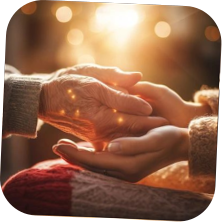
🛠️ Bricolage
Coup de main quotidien

🎉 Loisirs
Activités en groupe
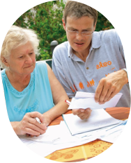
📄 Administratif
Accompagnement démarches
🧺 Courses
Faciliter déplacements
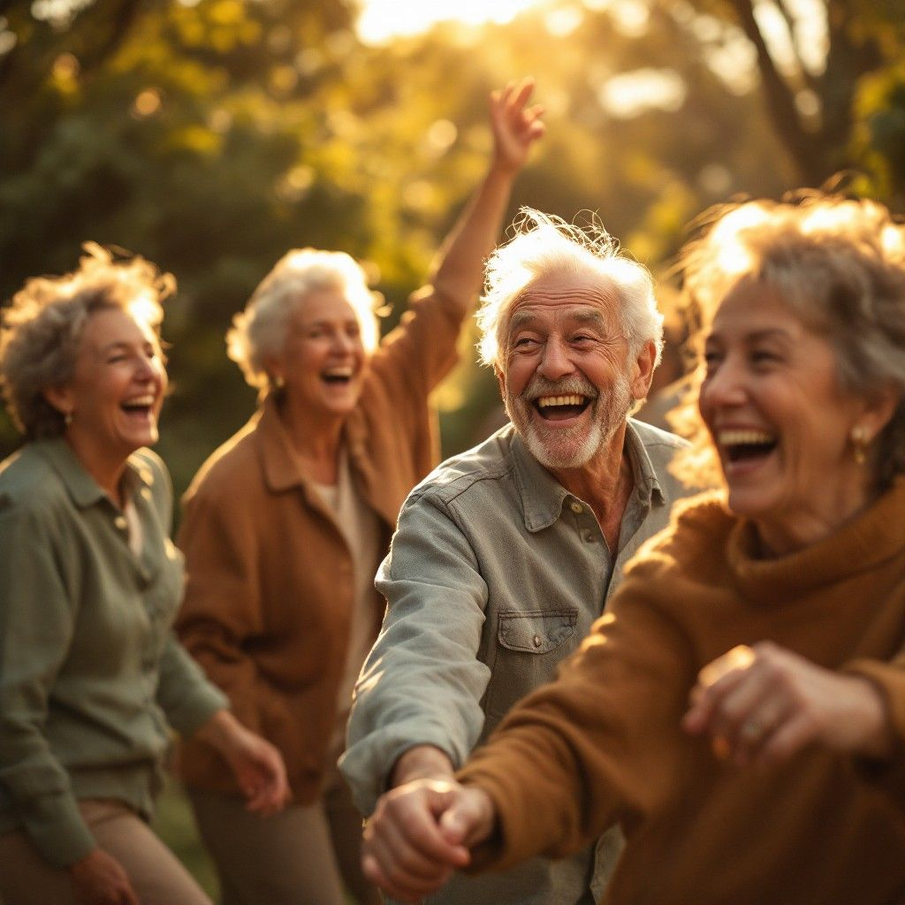
Une application humaine qui reconnecte les générations, favorise l'entraide et célèbre chaque moment partagé.
Face à l'isolement croissant des seniors, nous avons créé une solution simple, humaine et accessible.
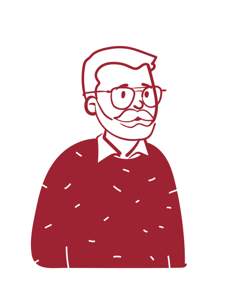
Partager des moments, rencontrer des personnes bienveillantes.
Lutter contre la solitude en maintenant une vie sociale active.
Donner et recevoir de l'aide, se sentir utile et soutenu.
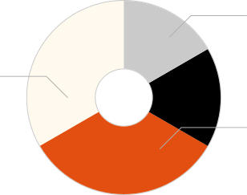
Interface intuitive accessible à tous
Communauté chaleureuse
Lien local durable
Indépendance avec soutien
Partager un café, discuter

Coup de main quotidien
Activités en groupe

Accompagnement démarches
Faciliter déplacements
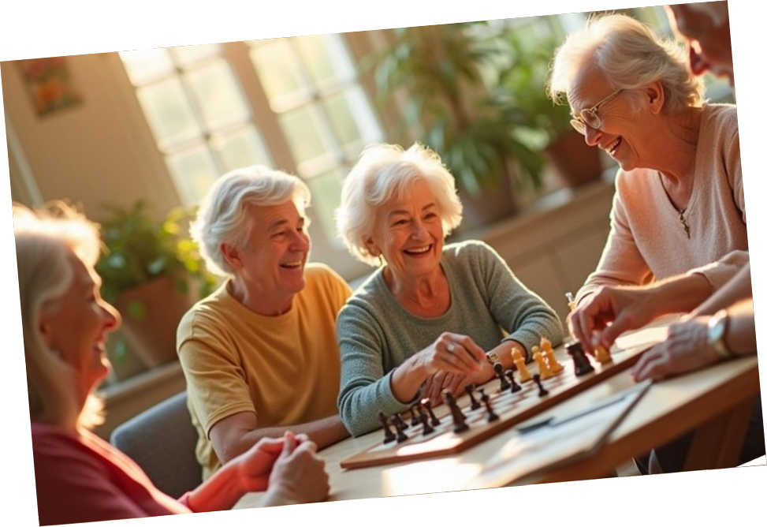
60-75 ans, ville ou rural
Bénéficiaires et contributeurs
Lutter contre l'isolement
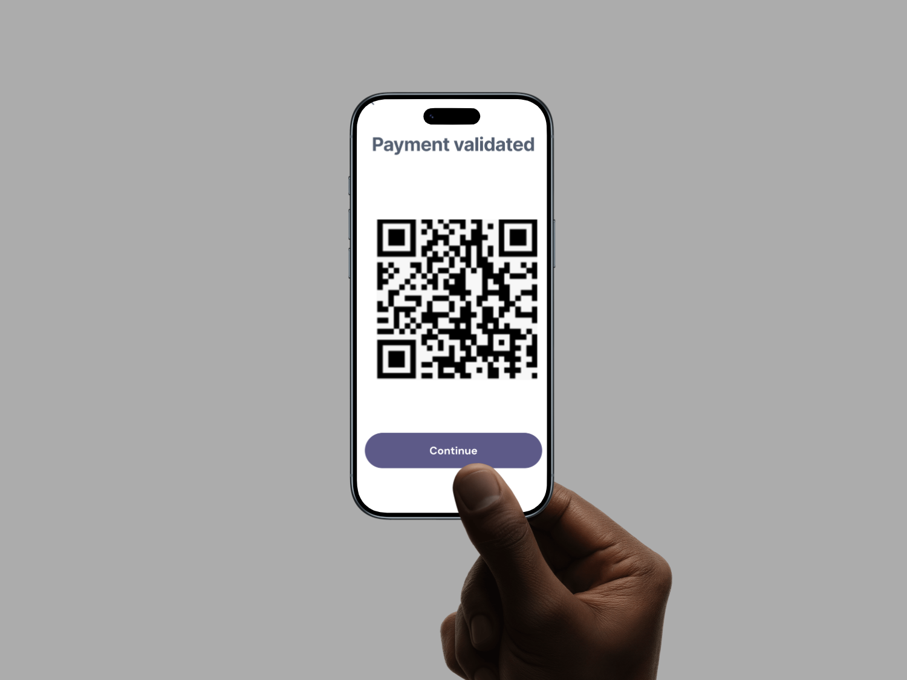
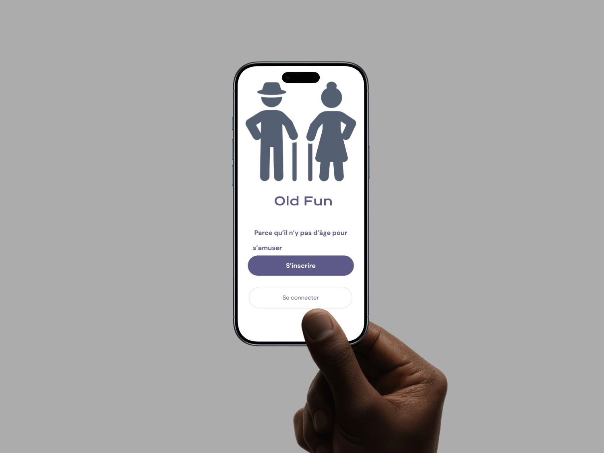


Réseau d'entraide intergénérationnelle
Urbain et rural
Acteurs locaux
Échanges enrichis
Amélioration continue
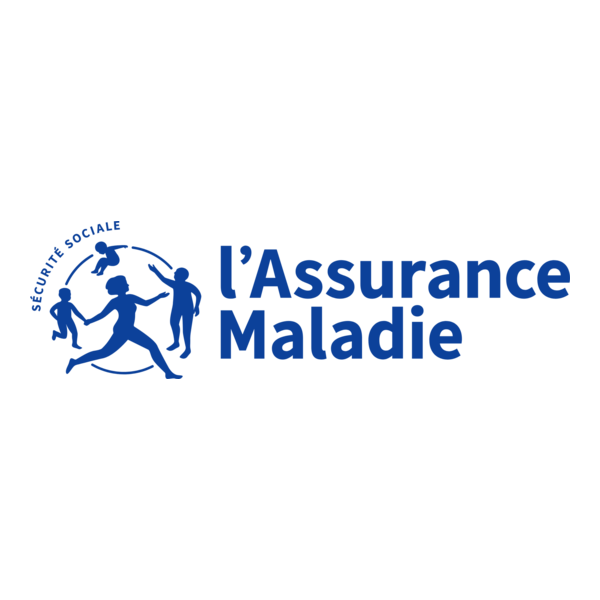
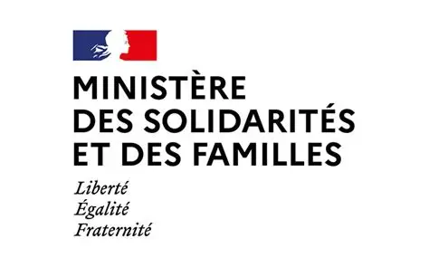
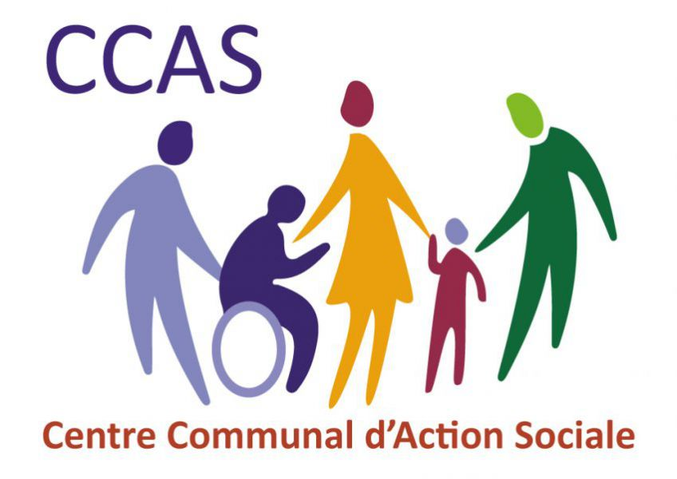
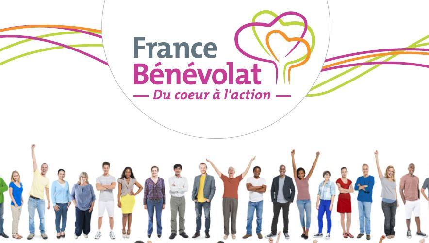
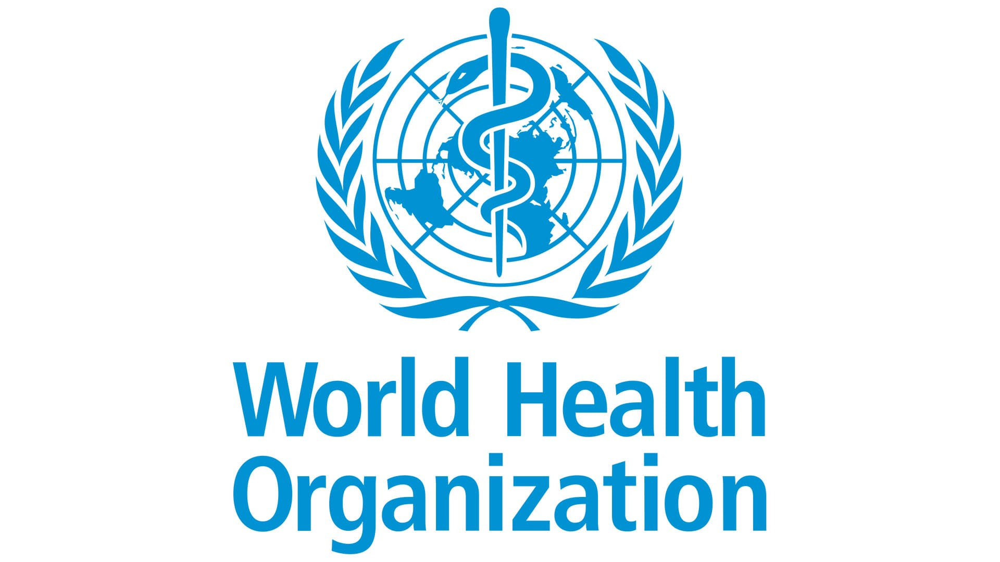
* Logos à titre d'exemple - projet étudiant
Découvrez comment Seren'Age transforme le quotidien